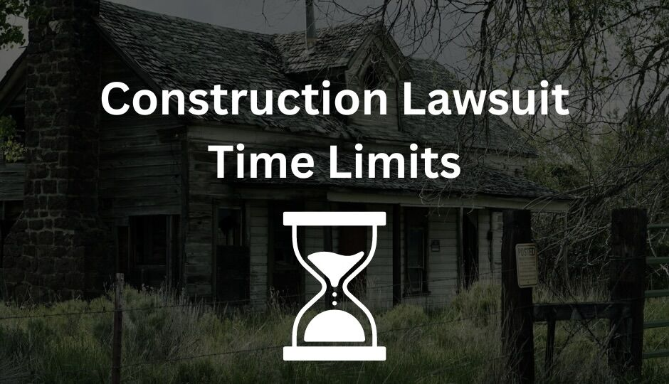

What are the Time Limits for Florida Construction Defect Lawsuits?

Florida construction defect lawsuits must be commenced within the time periods provided by law. Failing to initiate a lawsuit on time usually results in the loss of the right to bring a claim. Therefore, understanding the time periods for construction defect suits is critical for both Florida contractors and property owners.
Three concepts are key to understanding construction lawsuit timing considerations:
- Statutes of Limitations
- Statutes of Repose
- The Difference Between Latent Defects & Patent Defects
What is the Difference Between a Statute of Limitations and Statute of Repose?
Statutes of limitations and statutes of repose both establish time periods for when a construction defect lawsuit must be filed. The reader may wonder: "Why are there two different time limitations?" This is a reasonable question, and if you are thinking this, you are not alone in your confusion.
The answer to this question boils down to the fact that statutes of limitations periods can be uncertain. For example, a 4-year statute of limitations period may not begin until a homeowner actually discovers a latent problem with their home. After discovering that problem, the homeowner then has 4 years to initiate their lawsuit.
However, statutes of limitations create a great degree of uncertainty for designers and builders. Under a statute of limitations, they could be sued 10 years down the line ... 20 years ... it really can depend on when the homeowner finds a latent problem. This creates a lot of anxiety, especially for folks like a retired engineer who designed a beachfront condo 40 years ago which is beginning to succumb to the elements.
In the law, we like to maintain at least a degree of certainty. Or, at least, a cohort of construction lobbyists in Tallahassee prefer this result. Therefore, Florida law also provides for a statute of repose. The statute of repose sets a maximum outer limit for commencing a construction defect lawsuit, starting from a date certain. Up until April 2023, this period was 10 years. Under Florida's new law, it is 7 years.
To be clear, either one of these limitations periods can time-bar a lawsuit. The difference is simply that one period is a little bit shorter and no one knows when it starts, and the other is longer and everyone knows when it starts.
With that said, we can get into the specifics.
What is the Florida Statute of Limitations for Construction Defects?
Under Section 95.11(3)(b), the Florida statute of limitations for construction and design defect claims is 4 years. This period starts to tick from the date when one of the following acts occur (whichever is earlier):
- The date of issuance of a temporary certificate of occupancy, a certificate of occupancy, or a certificate of completion, or
- The date of abandonment of construction if not completed.
However, there is a catch. The law goes on to state that when a lawsuit "involves a latent defect, the time runs from the time the defect is discovered or should have been discovered with the exercise of due diligence." In practical terms, this means that for hidden defects, the statute of limitations period does not start to tick until the homeowner finds the problem or should have noticed the problem.
Therefore, statutes of limitations really depend on whether a defect is noticeable or hidden. Which brings us to our next point:
What is the Difference Between Patent and Latent Defects in Florida?
In Florida, a "patent" defect is a defect that is readily and easily observable. A "latent" defect is essentially the opposite.
For example, a roof that was installed with improper flashing which performs for 5 years (due to copious amounts of roofing cement applied by the builder), but then starts to leak, likely represents a "latent" defect. On the other hand, a home with incorrectly installed doors which have never closed correctly probably represents a "patent" defect.
Applying this example to the statute of limitations, let's consider a home which was completed in January 2010 with these two defects:
- Incorrectly Installed Doors: This is probably a patent defect. The four year statute of limitations runs from January 2010, the date of the certificate of completion. The right to file suit is barred in January 2014.
- Bad Roof Flashing: This is probably a latent defect. If the house starts to show water stains on the ceiling in January 2015, the statute of limitations will expire in January 2019.
In this scenario, the homeowner may feel comfortable waiting for the roofing issue to progress, and then filing suit in January 2018. However, this would be a fatal mistake. Although the suit would be permitted under the statute of limitations, it would be barred by the statute of repose.
This leads us to our next point ...
What is the Florida Statute of Repose for Construction Defects?
In Florida, the statute of repose for construction and design defect suits is 7 years. This period is absolute, and represents the latest point this type of suit can filed, regardless of the statute of limitations.
The statute of repose period begins to tick from the earliest of the following events:
- Issuance of a temporary certificate of occupancy, a certificate of occupancy, or a certificate of completion, or
- The date of abandonment of construction if not completed.
In the hypothetical above, the home completed in January 2010 would reach the end of the repose period in January 2017. Therefore, even though roofing lawsuit would be allowed under the statute of limitations up until 2019, this period would be cut short by the 7 year statute of repose.
Summary
Florida's statute of limitations and statute of repose provide two different time limits for when a construction defect suit can be filed. The statute of limitations is shorter, and this period can be uncertain when the claim involves a latent defect. On the other hand, the statute of repose disregards whether a defect is latent or patent, overrides the statute of limitations, and provides an absolute limit for when suit can be filed.
DISCLAIMER: The information provided on this website does not, and is not intended to, constitute legal advice; instead, all information, content, and materials available on this site are for general informational purposes only.
For more information, please visit www.ReadyLegal.Net.